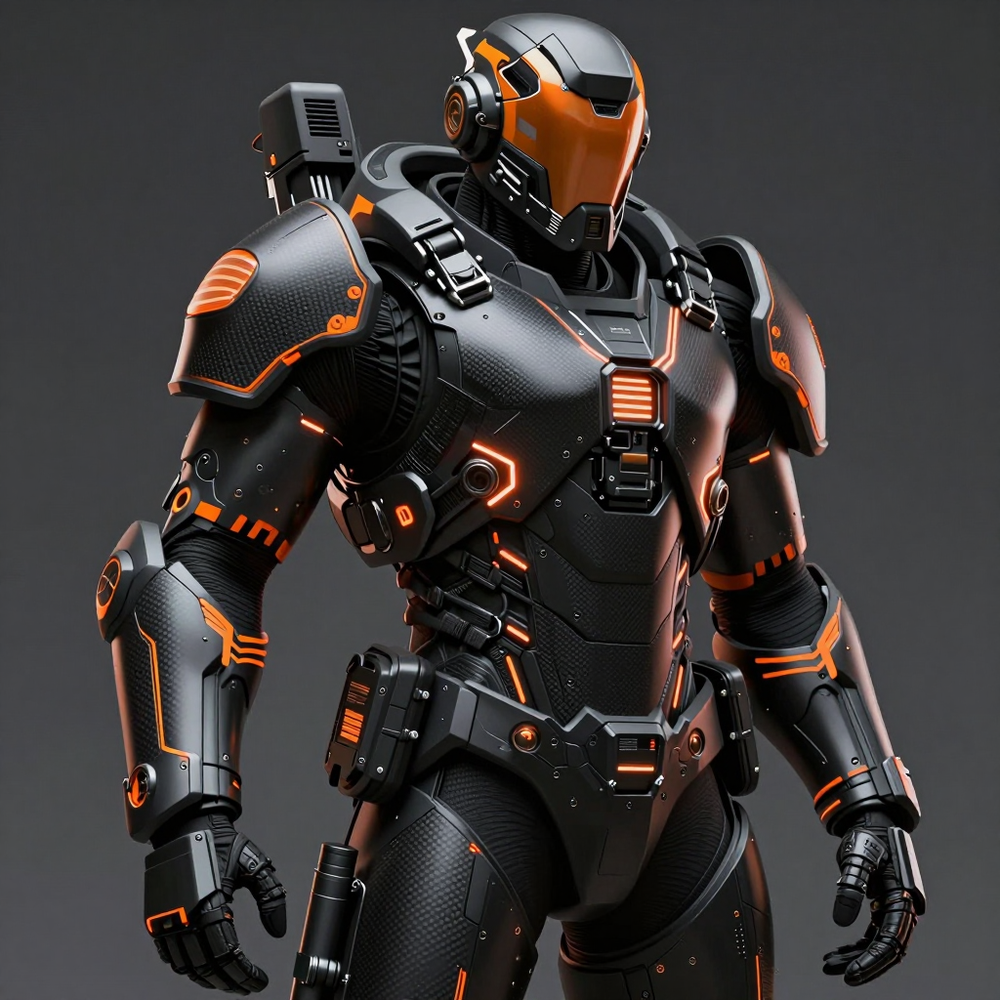
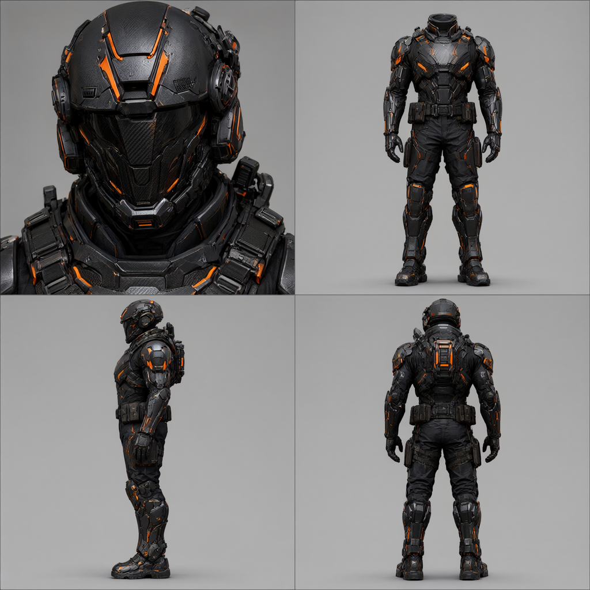
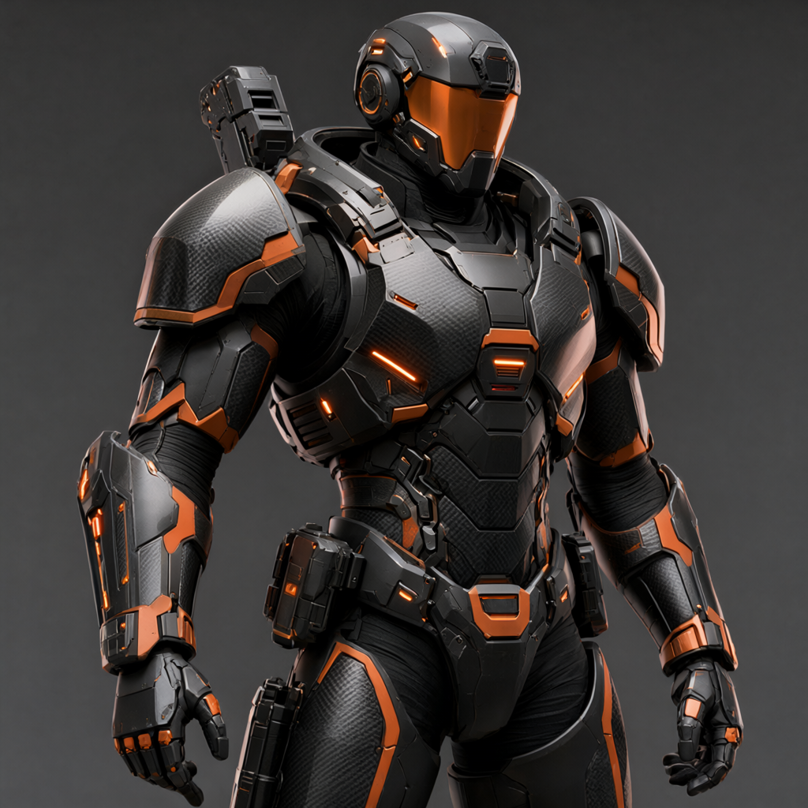
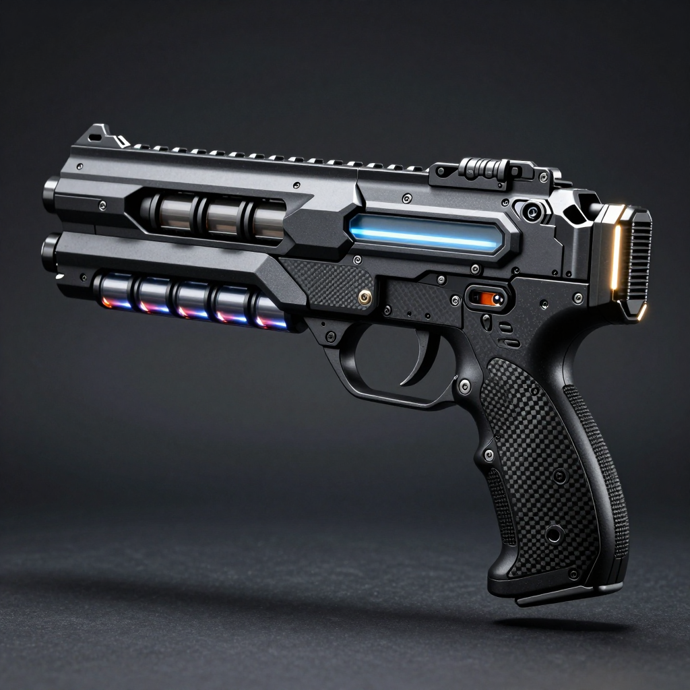
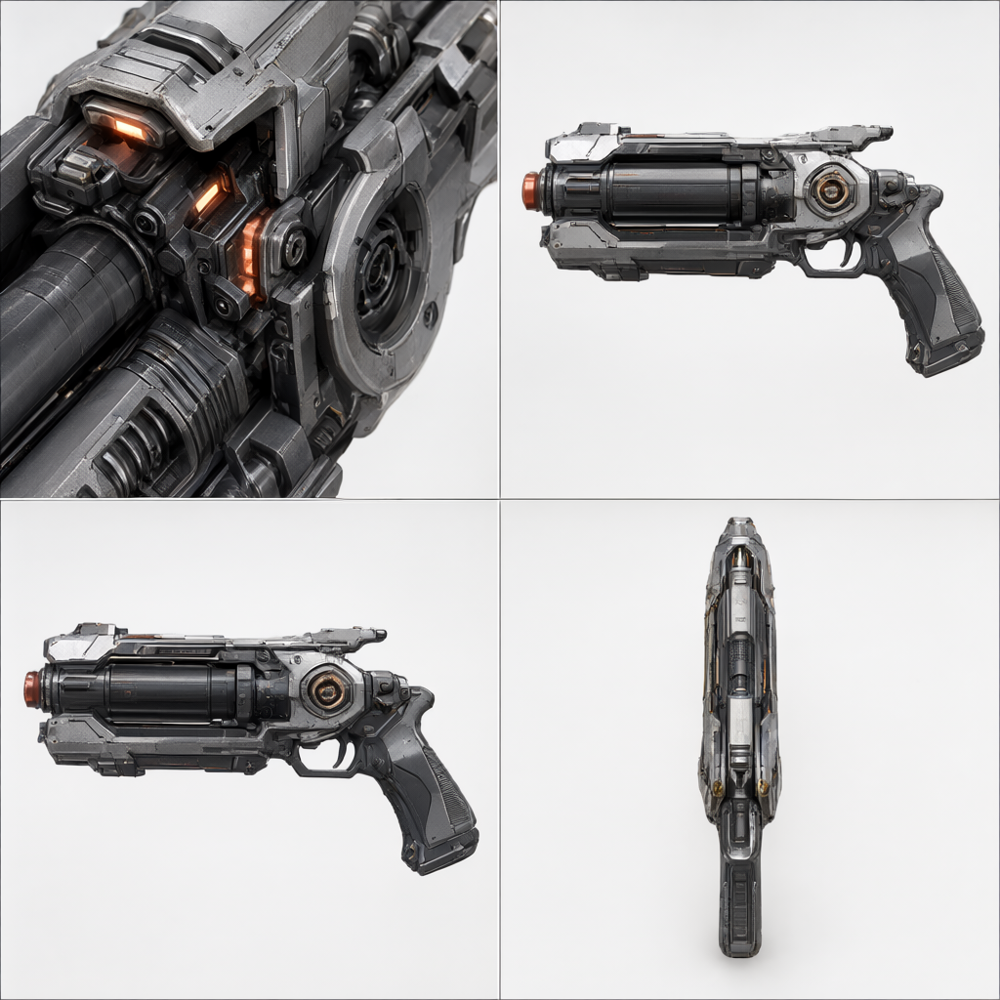
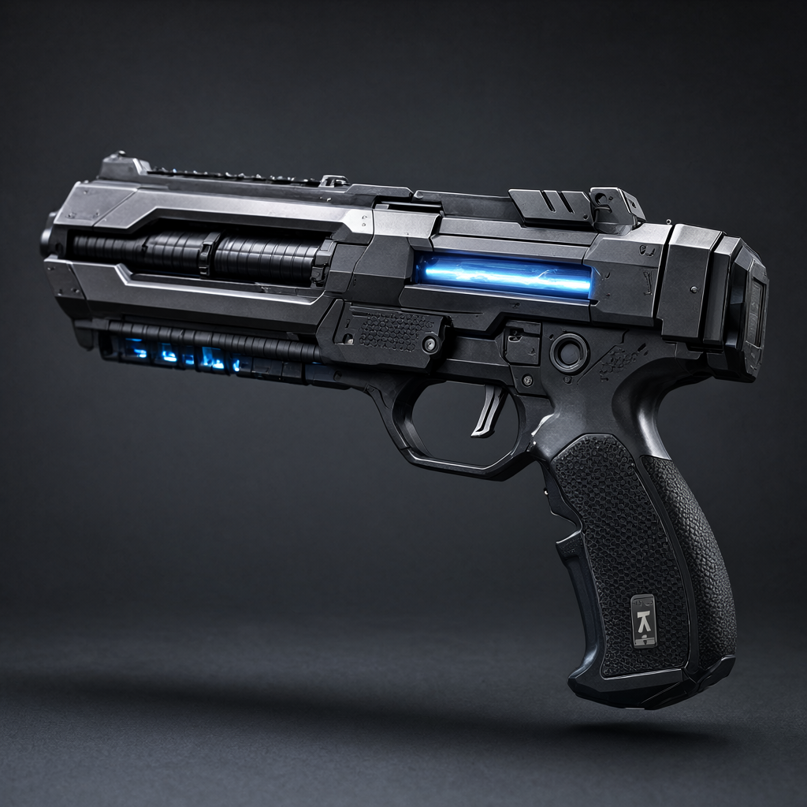
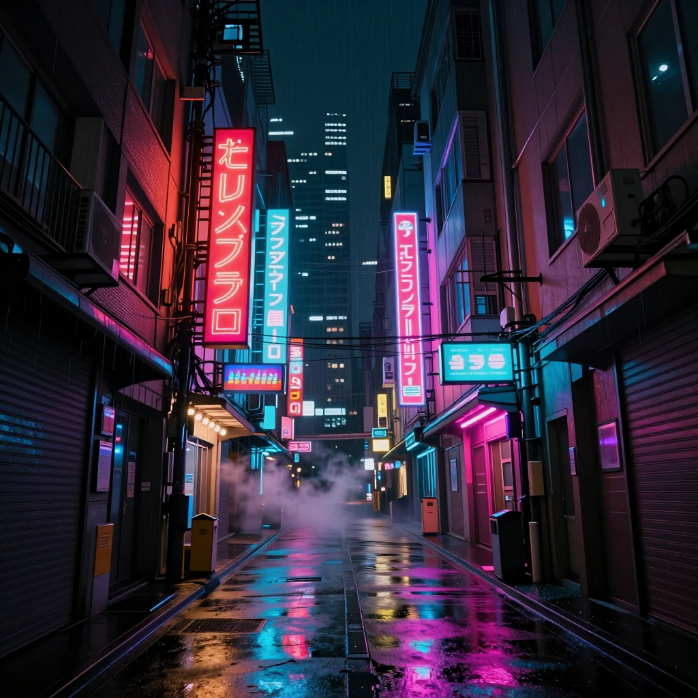
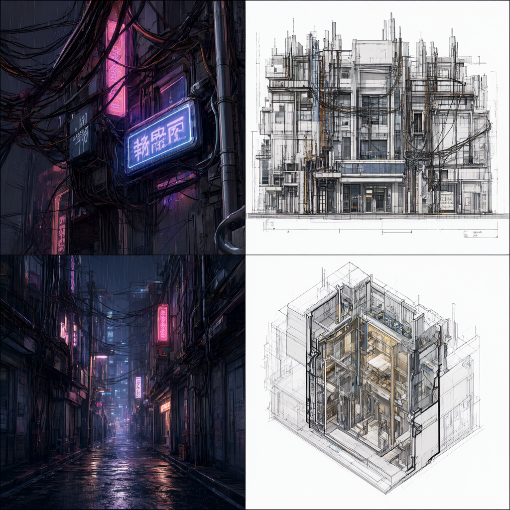
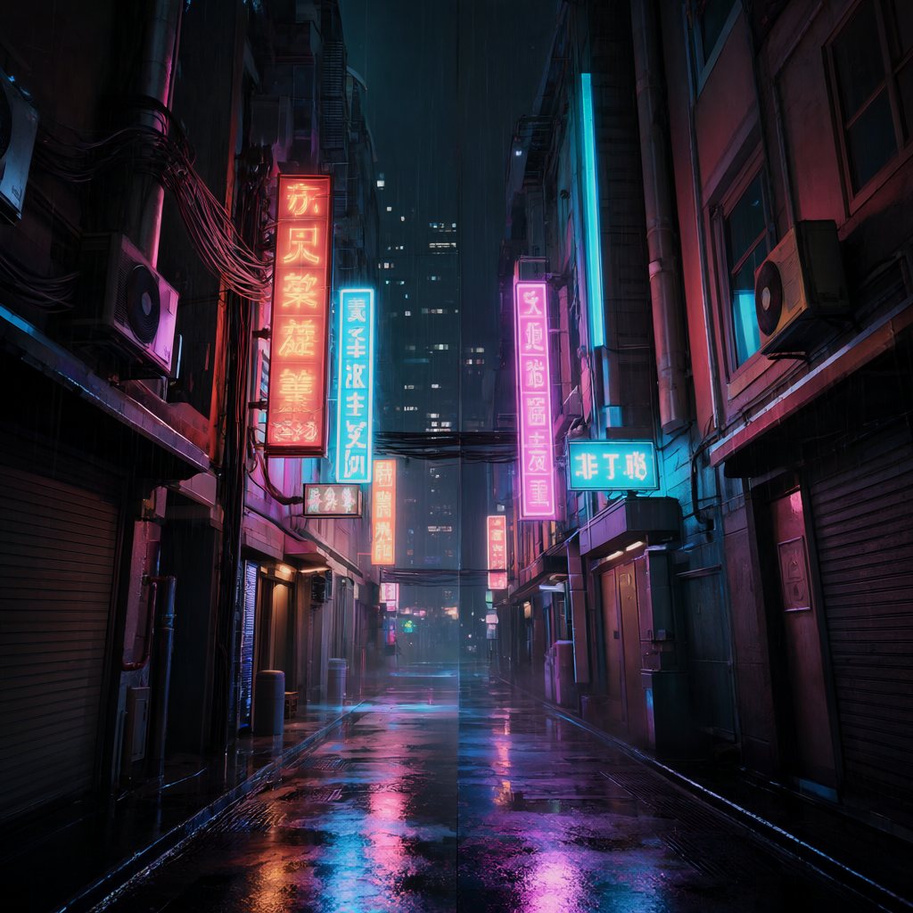

⚡ 方案 A (Z-Image-Turbo 极速概念) 单阶段
8 步 AuraFlow 采样 · 极简 Single-Stream DiT
~17.2s / 图
实操效果定位：出图快到难以置信，天然具有高对比度电影氛围和饱满光影。非常适合作为主创团队第一轮风暴与快速情绪板（Moodboard）初筛，但很难直接作为下游严格建模的参考蓝图。
📐 方案 B (Qwen Image 2.1 文本直出) 单阶段
25 步 Euler 采样 · qwen3vl 语义双流 DiT
~47.2s / 图
实操效果定位：凭借巨大的视觉语言模型先验，对“无头”、“严格四象限”和“正交视角”执行极其坚定。四分格构图犹如 CAD 图纸般整饬，但单图生成耗时约为方案 A 的 2.8 倍，直接用于头脑风暴成本偏高。
🔄 方案 C (双模协同：概念先导 $ o$ 工业解构) 双阶段串联
Z-Turbo 出概念 $ o$ 潜空间注入 Qwen 2.1 强制规范化
~61.4s (17s+44s)
实操效果定位：既有方案 A 独有的前卫艺术光影与前卫配色，又具备方案 B 的严格无头三视图与工程分割边界。完美解决了方案 A“难以严格无头”和方案 B“直出稍显平淡”的双重痛点，是影视与游戏美术工业化管线的最优解。
character
char_01: 赛博朋克重装雇佣兵
基准测试用例对比 · 1024×1024 分辨率
⚡ 方案 A (Z-Turbo)
16.7s

定位：快速概念情绪板初筛 (8步极速氛围)
Prompt: Cinematic concept art, Cyberpunk heavy mercenary in tactical exoskeleton armor, matte black and neon orange carbon-fiber plating, combat harness, volumetric neon lighting, 1024x1024, atmospheric masterpiece
📐 方案 B (Qwen 2.1 直出)
46.3s

定位：纯文本直出严谨工业级四视图 (无头/正交)
Prompt: 4-panel character design turnaround sheet on neutral solid grey background: top-left quadrant is extreme close-up of face and tactical helmet; top-right quadrant is headless front full-body view (headless body model, showing only from neck down to boots, highlighting costume tailoring, carbon armor plating with no head or face); bottom-left quadrant is orthographic side profile view; bottom-right quadrant is orthographic back view. Character subject: Cyberpunk heavy mercenary in tactical exoskeleton armor, matte black and neon orange carbon-fiber plating. Concept blueprint turnaround sheet, distinct border lines, studio product lighting, 1024x1024, sharp textures
🔄 方案 C (双模协同)
59.5s 总耗时

定位：双模协同：承袭 Z-Turbo 概念光影与色调，由 Qwen 2.1 强制规范化为严谨四视图
Workflow: 载入方案 A 概念资产作为 VAE 潜空间锚点，由 Qwen 2.1 以 42.7s 完成重构与四视图规整输出。
prop
prop_01: 赛博战术等离子手枪
基准测试用例对比 · 1024×1024 分辨率
⚡ 方案 A (Z-Turbo)
18.1s

定位：快速概念情绪板初筛 (8步极速氛围)
Prompt: Cinematic hero prop shot of a futuristic cyberpunk plasma blaster sidearm with battery magazine, glowing energy heatsink vents, carbon-fiber textured ergonomic grip, dramatic rim light, 1024x1024, photo-studio lighting
📐 方案 B (Qwen 2.1 直出)
47.1s

定位：纯文本直出严谨工业级四视图 (无头/正交)
Prompt: 4-panel prop design sheet, 4-view split panel layout on clean neutral gradient studio background: top-left quadrant is extreme macro close-up of intricate mechanical joints, surface textures, and battery magazine; top-right quadrant is front orthographic view of the entire plasma blaster sidearm; bottom-left quadrant is side profile view showing thickness and silhouette; bottom-right quadrant is top-down aerial overhead view. Futuristic cyberpunk plasma blaster. Industrial design reference blueprint, clean divider lines, studio product lighting, 1024x1024
🔄 方案 C (双模协同)
62.4s 总耗时

定位：双模协同：承袭 Z-Turbo 概念光影与色调，由 Qwen 2.1 强制规范化为严谨四视图
Workflow: 载入方案 A 概念资产作为 VAE 潜空间锚点，由 Qwen 2.1 以 44.3s 完成重构与四视图规整输出。
scene
scene_01: 赛博朋克雨夜九龙城寨
基准测试用例对比 · 1024×1024 分辨率
⚡ 方案 A (Z-Turbo)
18.1s

定位：快速概念情绪板初筛 (8步极速氛围)
Prompt: Cinematic wide establishing shot of Cyberpunk neon-drenched dense vertical alleyway in rainy night, towering modular apartment blocks with tangled hanging cables, glowing holographic kanji neon signs reflected on wet asphalt, steam rising from street gutters, cinematic volumetric lighting, 1024x1024
📐 方案 B (Qwen 2.1 直出)
48.3s

定位：纯文本直出严谨工业级四视图 (无头/正交)
Prompt: Architectural breakdown and production design sheet of Cyberpunk vertical alleyway in rainy night: top-left quadrant is macro architectural detail of tangled cables and neon sign fixtures; top-right quadrant is wide orthographic frontal facade elevation; bottom-left quadrant is street-level corridor perspective; bottom-right quadrant is isometric cross-section layout. Clean dividing borders, studio architectural blueprint, 1024x1024
🔄 方案 C (双模协同)
62.4s 总耗时

定位：双模协同：承袭 Z-Turbo 概念光影与色调，由 Qwen 2.1 强制规范化为严谨四视图
Workflow: 载入方案 A 概念资产作为 VAE 潜空间锚点，由 Qwen 2.1 以 44.2s 完成重构与四视图规整输出。